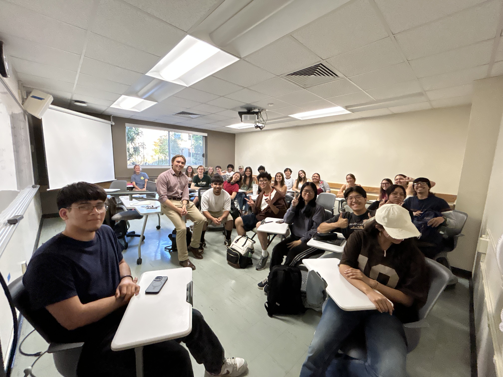

Working on an old grill. My father and I built and sold parts for 1940's International Harvester pickups that we developed. It is where I got my first sales, design, and fabrication experience.Precision TIG & MIG welding for water intake screens and heavy equipment parts. Certified in the State of California for TIG.
A campaign ad for my housing council presidential run. It was a great opportunity to lead the event team and give back to the community.
Tutoring and being a workshop leader has taught me at least as much as my students. I find it very rewarding to help people understand complex engineering and mathematics concepts.

Calculus 3 Spring 2026 Workshop - Last Quarter of Cal Poly! (switched to semesters)